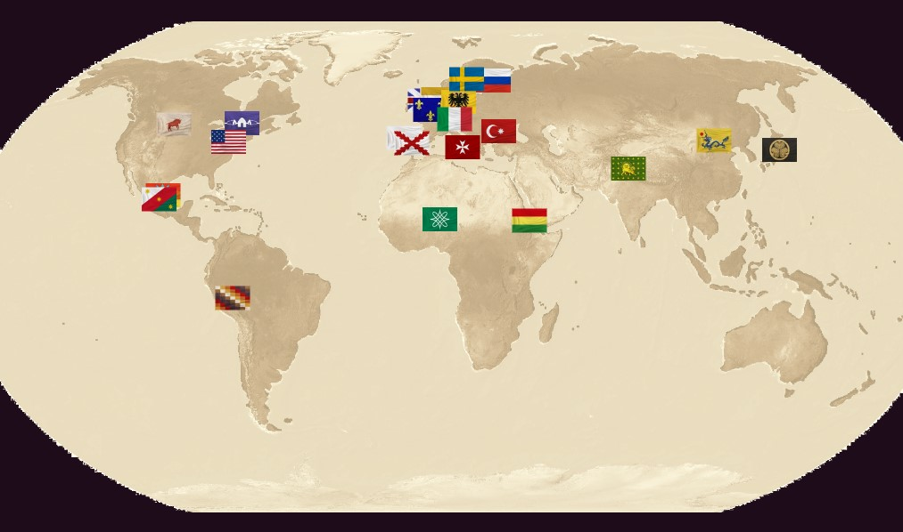
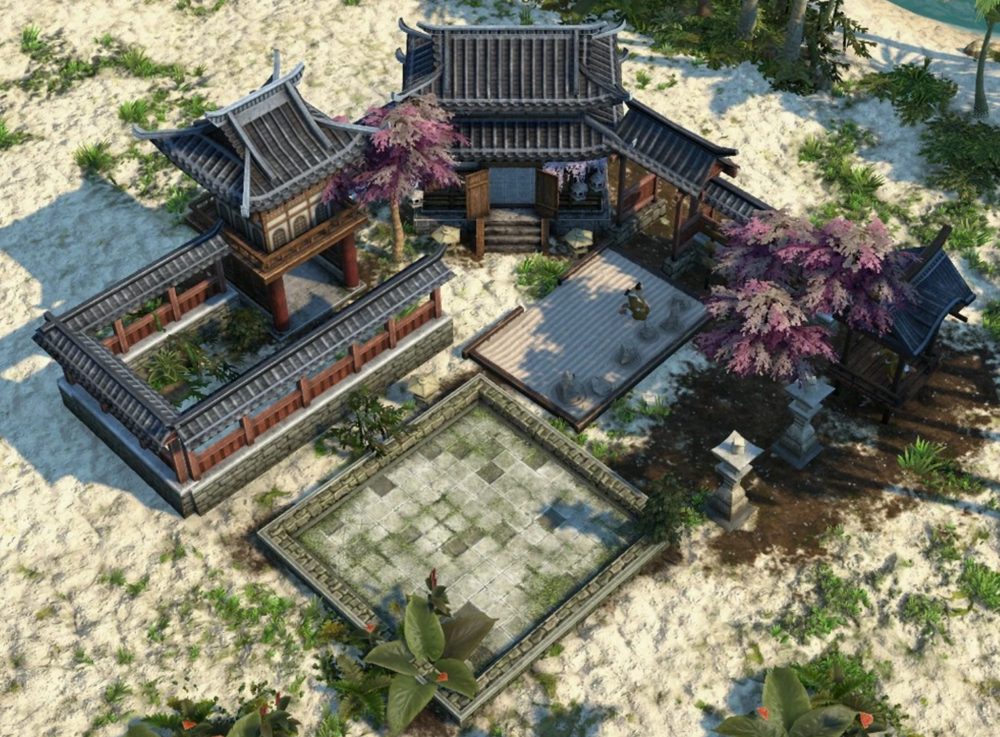

Morning of Spanish Empire

In the home city interface, at a corner of the port of Seville, the capital of Spain, a Galleon is seen waiting to set sail. It appears to be a member of the invincible fleet.
Storm Approaching Tenochtitlan

In the home city interface, there’s an imagined view of the Aztec capital based on what the Spanish conquistador witnessed. The city stands in the middle of a lake, more organized and grand than any European city of the time.
Distinct Style of Edo Castle

In the home city interface, the capital of Japan during the Edo period presents a completely different scene. Japan, in its period of isolation, had no chance to participate in the grand navigation; however, AOE3 provides new possibilities!
Spanish Colonies

In-game Southern European architecture and the azure seas reminiscent of the Caribbean are seen. The Spanish forces still primarily use melee weapons, perhaps because they are pioneers of the grand navigation.
Portuguese Colonies

Another Iberian civilization possesses unique organ guns and skirmishers. This civilization receives a town center every time it advances an age, allowing rapid city expansion.
Fountain of Youth

Was the mysterious Fountain of Youth located in Florida? How was it destroyed?
Fire Ships

The Knights of Malta use explosive fire attack ships, a tactic surprisingly shared with the Chinese in the East.
India

Camels, elephants, and orderly musketeers are seen. Not only the architecture but also the natural environment are uniquely South Asian, representing the diverse natural sceneries on Earth in AOE3.
Kingdom of Sweden

Located between mountains and snow, the Kingdom of Sweden, led by the “Lion of the North” Gustavus Adolphus, remains a significant power during the Age of Discovery.
Newly-born America

The westward trains and cowboys characterize that era in the US. In AOE3, the US is a civilization characterized by immigration. By bringing in immigrants from other countries, you acquire their technologies and routes!
Lakota People

Compared to European civilizations, the Native North Americans lack developed home cities, bastions, and factories. However, their bravery and wisdom make them skilled cavalry and gunmen. In AOE3, they can compete with European powers!
Ethiopia

AOE3 later added African civilizations, one of which is the ancient Ethiopian Empire, descendants of King Solomon. African civilizations strengthen themselves by uniting with other African tribes or allying with European powers.
Civilization Distribution
In the current version of AOE3, there are a total of 22 main civilizations available for players to portray directly. They are distributed across Europe, Asia, Africa, and the Americas.
Seminole Village

In addition to the playable civilizations, AOE3 also features smaller-scale civilizations on different maps. Players can establish trade relations with these civilizations to access their technologies and military power. The Seminole are indigenous people in the Georgia region, and similar native civilizations are recorded, with a total of 32 in AOE3 - truly a history book within the game.
Zen Temple
Another minor civilization. See that rectangle yard over there? If you build a trading post there, you can learn from Zen's wisdom to increase your economic growth, as well as recruit special martial monks to surprise your opponent. The appearance of the Zen Temple here is somewhat unusual. Perhaps this is part of the randomness of AOE3, making each game unique.